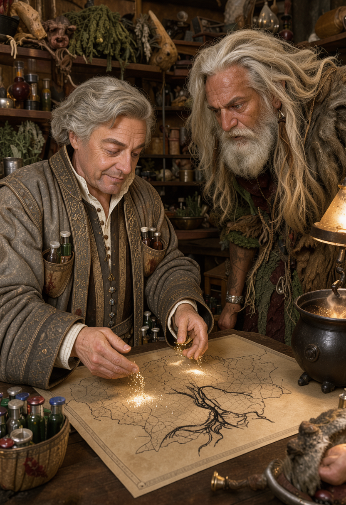
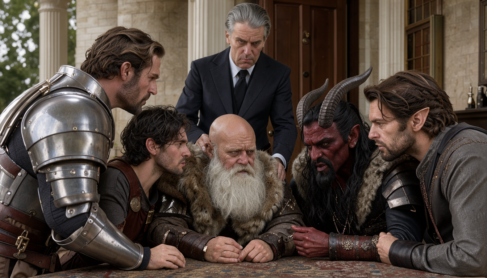
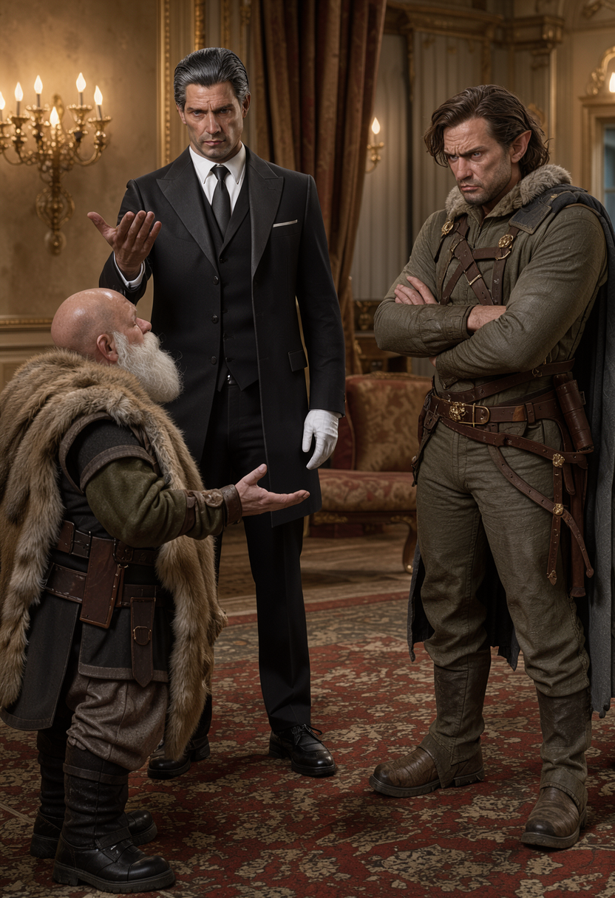
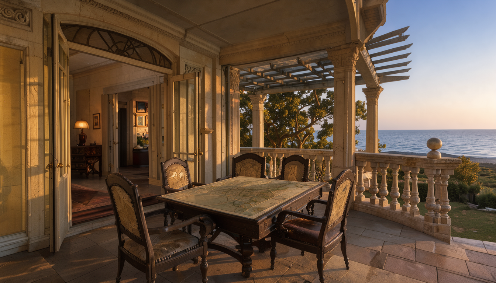
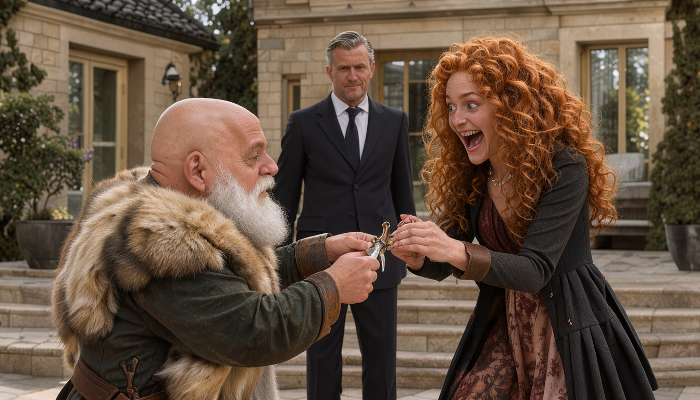
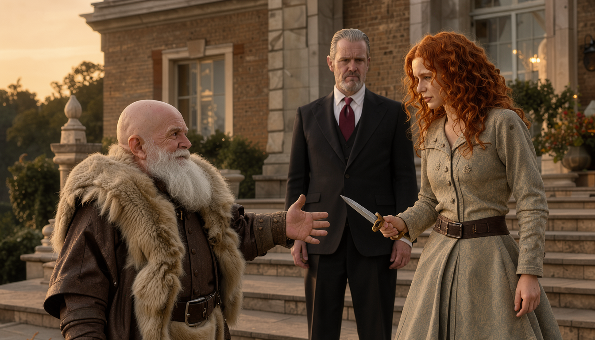
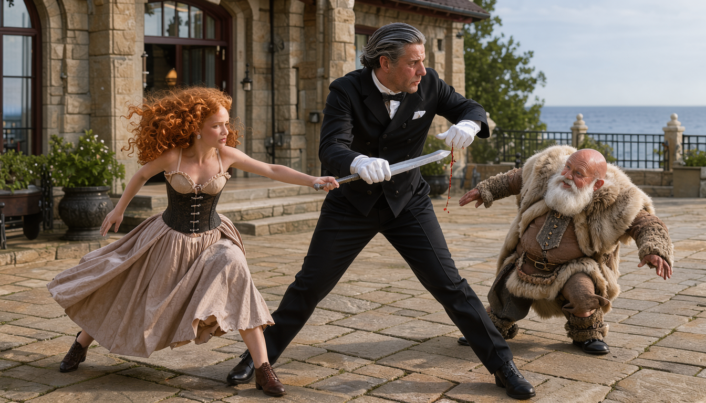

LAST TIME — THE MANSION DOOR
Last time: our idiots followed 600 gold to a mansion and met their quest-giver. Meanwhile, Chip owes a shopkeeper three unconscious guards and a memory. Debts like that always come due.
THUMBA'S SHOP — THE MAP REWRITES ITSELF
MEANWHILE…
COLORFUL CREATIONS · MORNING. Colorful Creations. A memory potion, a lesson, and sand with opinions.

ThumbaFourth time this month. How did you even get here?
ChipThree people. A conversation and a shakedown.
THE AUDIENCE — PHANDALIN OR BUST
NORTHGATE MANOR, BACK PORCH · MIDDAY. Lilly unrolls her dream: Phandalin or bust. Rocketcandy's instincts itch — nobody says 'adventurer' that many times innocently.

LillyTake me all the way down to Phandalin!
RocketcandyYou use the word 'adventurer' an awful lot…
🎲 Insight 18 — suspicion
A THOUSAND GOLD TO WALK AWAY
NORTHGATE MANOR, BACK PORCH · MIDDAY. Lilly pitches; the party huddles. Biggins politely closes the door on the whole conversation.

BigginsBeg your pardon, milady. I will attend to your guests.
NORTHGATE MANOR, SITTING ROOM · MIDDAY. Biggins makes an offer. Vadania makes a face.

BigginsA thousand gold — to leave her be.
VadaniaWe're taking the contract. Definitely.
THE PACT
NORTHGATE MANOR, SITTING ROOM · MIDDAY. Keep her safe — or die trying. Sealed in magic.

BigginsI will ensure you are held to that.
🎲 Arcana 18 — a price is set
THE DARE
THE LANAI · GOLDEN HOUR. Ocean views, expensive chairs, and one sheltered girl about to ruin the furniture.

THE LANAI · GOLDEN HOUR. Gulgrim has a plan, and like all his plans, it involves handing a sheltered girl a weapon. Part one: the gift.

LillyMy first knife!
THE LANAI · GOLDEN HOUR. Gulgrim's test: can she put steel in flesh? "Stab me," he says. She vomits first. Then she rallies.

GulgrimGo ahead. Put knife into flesh.
THE LANAI · GOLDEN HOUR. She lunges at running speed — and Biggins simply isn't standing where he was.

BigginsPlease allow me to clean the dagger for you.
BigginsIf this was your plan — I hope you kept the receipt.
🧠 Vicious Mockery — 6 psychic
BigginsPlease allow me to clean the dagger for you.
GulgrimIf this was your plan — I hope you kept the receipt.
🧠 Vicious Mockery — 6 psychic